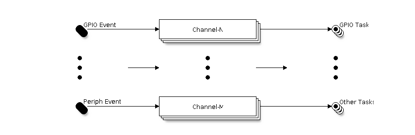

Event Task Matrix (ETM)
Introduction
Normally, if a peripheral X needs to notify peripheral Y of a particular event, this could only be done via a CPU interrupt from peripheral X, where the CPU notifies peripheral Y on behalf of peripheral X. However, in time-critical applications, the latency introduced by CPU interrupts is non-negligible.
With the help of the Event Task Matrix (ETM) module, some peripherals can directly notify other peripherals of events through pre-set connections without the intervention of CPU interrupts. This allows precise and low latency synchronization between peripherals, and lessens the CPU's workload as the CPU no longer needs to handle these events.

ETM channels Overview
The ETM module has multiple programmable channels, they are used to connect a particular Event to a particular Task. When an event is activated, the ETM channel will trigger the corresponding task automatically.
Peripherals that support ETM functionality provide their or unique set of events and tasks to be connected by the ETM. An ETM channel can connect any event to any task, even looping back an event to a task on the same peripheral. However, an ETM channel can only connect one event to one task at a time (i.e., 1 to 1 relation). If you want to use different events to trigger the same task, you can set up more ETM channels.
Typically, with the help of the ETM module, you can implement features like:
Toggle the GPIO when a timer alarm event happens
Start an ADC conversion when a pulse edge is detected on a GPIO
Functional Overview
The following sections of this document cover the typical steps to configure and use the ETM module.
ETM Channel Allocation - describes how to install and uninstall the ETM channel.
ETM Event - describes how to allocate a new ETM event handle or fetch an existing handle from various peripherals.
ETM Task - describes how to allocate a new ETM task handle or fetch an existing handle from various peripherals.
ETM Channel Control - describes common ETM channel control functions.
Power Management - describes the options and strategies provided by the driver in order to save power.
Thread Safety - lists which APIs are guaranteed to be thread-safe by the driver.
Kconfig Options - lists the supported Kconfig options that can be used to make a different effect on driver behavior.
ETM Channel Allocation
There are many identical ETM channels in ESP32-P4 [1], and each channel is represented by esp_etm_channel_handle_t in the software. The ETM core driver manages all available hardware resources in a pool so that you do not need to care about which channel is in use and which is not. The ETM core driver will allocate a channel for you when you call esp_etm_new_channel() and delete it when you call esp_etm_del_channel(). All requirements needed for allocating a channel are provided in esp_etm_channel_config_t.
Before deleting an ETM channel, please disable it by esp_etm_channel_disable() in advance or make sure it has not been enabled yet by esp_etm_channel_enable().
ETM Event
ETM Event abstracts the event source, masking the details of specific event sources, and is represented by esp_etm_event_handle_t in the software, allowing applications to handle different types of events more easily. ETM events can be generated from a variety of peripherals, thus the way to get the event handle differs from peripherals. When an ETM event is no longer used, you should call esp_etm_channel_connect() with a NULL event handle to disconnect it and then call esp_etm_del_event() to free the event resource.
GPIO Events
GPIO edge event is the most common event type, it can be generated by any GPIO pin. You can call gpio_new_etm_event() to create a GPIO event handle, with the configurations provided in gpio_etm_event_config_t:
gpio_etm_event_config_t::edgeorgpio_etm_event_config_t::edgesdecides which edge(s) to trigger the event(s), supported edge types are listed in thegpio_etm_event_edge_t.
You need to build a connection between the GPIO ETM event handle and the GPIO number. So you should call gpio_etm_event_bind_gpio() afterwards. Please note, only the ETM event handle that created by gpio_new_etm_event() can set a GPIO number. Calling this function with other kinds of ETM events returns ESP_ERR_INVALID_ARG error. Needless to say, this function does not help with the GPIO initialization, you still need to call gpio_config() to set the property like direction, pull up/down mode separately.
Other Peripheral Events
You can call
esp_systick_new_etm_alarm_event()to get the ETM event from RTOS Systick, one per CPU core.Refer to ESP Timer (High Resolution Timer) for how to get the ETM event handle from esp_timer.
Refer to GPTimer's ETM Events and Tasks for how to get the ETM event handle from GPTimer.
Refer to Asynchronous Memory Copy for how to get the ETM event handle from async memcpy.
Refer to Motor Control Pulse Width Modulator (MCPWM) for how to get the ETM event handle from MCPWM.
Refer to Analog Comparator for how to get the ETM event handle from analog comparator.
Refer to Temperature Sensor for how to get the ETM event handle from temperature sensor.
Refer to Inter-IC Sound (I2S) for how to get the ETM event handle from I2S.
Refer to LED Control (LEDC) for how to get the ETM event handle from LEDC.
ETM Task
ETM Task abstracts the task action and is represented by esp_etm_task_handle_t in the software, allowing tasks to be managed and represented in the same way. ETM tasks can be assigned to a variety of peripherals, thus the way to get the task handle differs from peripherals. When an ETM task is no longer used, you should call esp_etm_channel_connect() with a NULL task handle to disconnect it and then call esp_etm_del_task() to free the task resource.
GPIO Tasks
GPIO task is the most common task type. One GPIO can take one or more GPIO ETM task actions, and one GPIO ETM task action can even manage multiple GPIOs. When the task gets activated by the ETM channel, all managed GPIOs can set/clear/toggle at the same time. You can call gpio_new_etm_task() to create a GPIO task handle, with the configurations provided in gpio_etm_task_config_t:
gpio_etm_task_config_t::actionorgpio_etm_task_config_t::actionsdecides what GPIO action(s) would be taken by the ETM task. Supported actions are listed in thegpio_etm_task_action_t. If one GPIO needs to take more than one actions, the action tasks have to be created in onegpio_new_etm_task()call with filling the actions into the array ofgpio_etm_task_config_t::actions.
To build a connection between the GPIO ETM task and the GPIO number, you should call gpio_etm_task_add_gpio(). You can call this function by several times if you want the task handle to manage more GPIOs. Please note, only the ETM task handle that created by gpio_new_etm_task() can manage a GPIO. Calling this function with other kinds of ETM tasks returns ESP_ERR_INVALID_ARG error. Needless to say, this function does not help with the GPIO initialization, you still need to call gpio_config() to set the property like direction, pull up/down mode separately.
Before you call esp_etm_del_task() to delete the GPIO ETM task, make sure that all previously added GPIOs are removed by gpio_etm_task_rm_gpio() in advance.
Other Peripheral Tasks
Refer to GPTimer's ETM Events and Tasks for how to get the ETM task handle from GPTimer.
Refer to Temperature Sensor for how to get the ETM task handle from temperature sensor.
Refer to Inter-IC Sound (I2S) for how to get the ETM task handle from I2S.
Refer to LED Control (LEDC) for how to get the ETM task handle from LEDC.
ETM Channel Control
Connect Event and Task
An ETM event has no association with an ETM task, until they are connected to the same ETM channel by calling esp_etm_channel_connect(). Especially, calling the function with a NULL task/event handle means disconnecting the channel from any task or event. Note that, this function can be called either before or after the channel is enabled. But calling this function at runtime to change the connection can be dangerous, because the channel may be in the middle of a cycle, and the new connection may not take effect immediately.
Enable and Disable Channel
You can call esp_etm_channel_enable() and esp_etm_channel_disable() to enable and disable the ETM channel from working.
ETM Channel Profiling
To check if the ETM channels are set with proper events and tasks, you can call esp_etm_dump() to dump all working ETM channels with their associated events and tasks. The dumping format is like:
===========ETM Dump Start==========
channel 0: event 48 ==> task 17
channel 1: event 48 ==> task 90
channel 2: event 48 ==> task 94
===========ETM Dump End============
The digital ID printed in the dump information is defined in the soc/soc_etm_source.h file.
Power Management
When power management is enabled, i.e., CONFIG_PM_ENABLE is on, the system may adjust or disable the clock source, and power off the ETM peripheral before going to sleep. As a result, the existing connection between events and tasks will be lost, and the ETM channels can't work correctly after wake up. So by default, the driver will acquire a power management lock internally to forbid the system from powering off the ETM peripheral.
If you want to save more power, you can set esp_etm_channel_config_t::etm_chan_flags::allow_pd to true. Then ETM registers will be backed up before sleep and restored after wake up. Please note, enabling this option will increase the memory consumption for saving the register context.
Thread Safety
The ETM core driver is thread-safe.
Factory functions (for example,
esp_etm_new_channel(),gpio_new_etm_task(), and other*_new_etm_*creators) are thread-safe and can be called from different RTOS tasks concurrently.Channel control APIs (for example,
esp_etm_channel_connect(),esp_etm_channel_enable(),esp_etm_channel_disable(),esp_etm_del_channel()) are also thread-safe. Concurrent operations on different channels are safe. Concurrent operations on the same channel are serialized internally; if an operation is incompatible with the current channel state, it will returnESP_ERR_INVALID_STATE.No functions are allowed to run within the ISR environment.
Kconfig Options
CONFIG_ETM_ENABLE_DEBUG_LOG is used to enable the debug log output. Enabling this option increases the firmware binary size as well.
API Reference
Header File
This header file can be included with:
#include "esp_etm.h"
Functions
-
esp_err_t esp_etm_new_channel(const esp_etm_channel_config_t *config, esp_etm_channel_handle_t *ret_chan)
Allocate an ETM channel.
Note
The channel can later be freed by
esp_etm_del_channel- Parameters:
config -- [in] ETM channel configuration
ret_chan -- [out] Returned ETM channel handle
- Returns:
ESP_OK: Allocate ETM channel successfully
ESP_ERR_INVALID_ARG: Allocate ETM channel failed because of invalid argument
ESP_ERR_NO_MEM: Allocate ETM channel failed because of out of memory
ESP_ERR_NOT_FOUND: Allocate ETM channel failed because all channels are used up and no more free one
ESP_FAIL: Allocate ETM channel failed because of other reasons
-
esp_err_t esp_etm_del_channel(esp_etm_channel_handle_t chan)
Delete an ETM channel.
- Parameters:
chan -- [in] ETM channel handle that created by
esp_etm_new_channel- Returns:
ESP_OK: Delete ETM channel successfully
ESP_ERR_INVALID_ARG: Delete ETM channel failed because of invalid argument
ESP_FAIL: Delete ETM channel failed because of other reasons
-
esp_err_t esp_etm_channel_enable(esp_etm_channel_handle_t chan)
Enable ETM channel.
Note
This function will transit the channel state from init to enable.
- Parameters:
chan -- [in] ETM channel handle that created by
esp_etm_new_channel- Returns:
ESP_OK: Enable ETM channel successfully
ESP_ERR_INVALID_ARG: Enable ETM channel failed because of invalid argument
ESP_ERR_INVALID_STATE: Enable ETM channel failed because the channel has been enabled already
ESP_FAIL: Enable ETM channel failed because of other reasons
-
esp_err_t esp_etm_channel_disable(esp_etm_channel_handle_t chan)
Disable ETM channel.
Note
This function will transit the channel state from enable to init.
- Parameters:
chan -- [in] ETM channel handle that created by
esp_etm_new_channel- Returns:
ESP_OK: Disable ETM channel successfully
ESP_ERR_INVALID_ARG: Disable ETM channel failed because of invalid argument
ESP_ERR_INVALID_STATE: Disable ETM channel failed because the channel is not enabled yet
ESP_FAIL: Disable ETM channel failed because of other reasons
-
esp_err_t esp_etm_channel_connect(esp_etm_channel_handle_t chan, esp_etm_event_handle_t event, esp_etm_task_handle_t task)
Connect an ETM event to an ETM task via a previously allocated ETM channel.
Note
Setting the ETM event/task handle to NULL means to disconnect the channel from any event/task
- Parameters:
chan -- [in] ETM channel handle that created by
esp_etm_new_channelevent -- [in] ETM event handle obtained from a driver/peripheral, e.g.
xxx_new_etm_eventtask -- [in] ETM task handle obtained from a driver/peripheral, e.g.
xxx_new_etm_task
- Returns:
ESP_OK: Connect ETM event and task to the channel successfully
ESP_ERR_INVALID_ARG: Connect ETM event and task to the channel failed because of invalid argument
ESP_FAIL: Connect ETM event and task to the channel failed because of other reasons
-
esp_err_t esp_etm_del_event(esp_etm_event_handle_t event)
Delete ETM event.
Note
Although the ETM event comes from various peripherals, we provide the same user API to delete the event handle seamlessly.
- Parameters:
event -- [in] ETM event handle obtained from a driver/peripheral, e.g.
xxx_new_etm_event- Returns:
ESP_OK: Delete ETM event successfully
ESP_ERR_INVALID_ARG: Delete ETM event failed because of invalid argument
ESP_FAIL: Delete ETM event failed because of other reasons
-
esp_err_t esp_etm_del_task(esp_etm_task_handle_t task)
Delete ETM task.
Note
Although the ETM task comes from various peripherals, we provide the same user API to delete the task handle seamlessly.
- Parameters:
task -- [in] ETM task handle obtained from a driver/peripheral, e.g.
xxx_new_etm_task- Returns:
ESP_OK: Delete ETM task successfully
ESP_ERR_INVALID_ARG: Delete ETM task failed because of invalid argument
ESP_FAIL: Delete ETM task failed because of other reasons
-
esp_err_t esp_etm_dump(FILE *out_stream)
Dump ETM channel usages to the given IO stream.
- Parameters:
out_stream -- [in] IO stream (e.g. stdout)
- Returns:
ESP_OK: Dump ETM channel usages successfully
ESP_ERR_INVALID_ARG: Dump ETM channel usages failed because of invalid argument
ESP_FAIL: Dump ETM channel usages failed because of other reasons
Structures
-
struct esp_etm_channel_config_t
ETM channel configuration.
Public Members
-
etm_clock_source_t clk_src
Clock source for the ETM channel
-
struct esp_etm_channel_config_t::etm_chan_flags flags
ETM channel flags
-
etm_clock_source_t clk_src
Type Definitions
-
typedef struct esp_etm_channel_t *esp_etm_channel_handle_t
ETM channel handle.
-
typedef struct esp_etm_event_t *esp_etm_event_handle_t
ETM event handle.
-
typedef struct esp_etm_task_t *esp_etm_task_handle_t
ETM task handle.
Header File
This header file can be included with:
#include "driver/gpio_etm.h"
This header file is a part of the API provided by the
esp_driver_gpiocomponent. To declare that your component depends onesp_driver_gpio, add the following to your CMakeLists.txt:REQUIRES esp_driver_gpio
or
PRIV_REQUIRES esp_driver_gpio
Functions
-
esp_err_t gpio_new_etm_event(const gpio_etm_event_config_t *config, esp_etm_event_handle_t *ret_event, ...)
Create an ETM event object for the GPIO peripheral.
Note
The created ETM event object can be deleted later by calling
esp_etm_del_eventNote
The newly created ETM event object is not bind to any GPIO, you need to call
gpio_etm_event_bind_gpioto bind the wanted GPIONote
Every success call to this function will acquire a free GPIO ETM event channel
- Parameters:
config -- [in] GPIO ETM event configuration
ret_event -- [out] Returned ETM event handle
... -- [out] Other returned ETM event handles if any (the order of the returned event handles is aligned with the array order in field
edgesingpio_etm_event_config_t)
- Returns:
ESP_OK: Create ETM event successfully
ESP_ERR_INVALID_ARG: Create ETM event failed because of invalid argument
ESP_ERR_NO_MEM: Create ETM event failed because of out of memory
ESP_ERR_NOT_FOUND: Create ETM event failed because all events are used up and no more free one
ESP_FAIL: Create ETM event failed because of other reasons
-
esp_err_t gpio_etm_event_bind_gpio(esp_etm_event_handle_t event, int gpio_num)
Bind the GPIO with the ETM event.
Note
Calling this function multiple times with different GPIO number can override the previous setting immediately.
Note
Only GPIO ETM object can call this function
- Parameters:
event -- [in] ETM event handle that created by
gpio_new_etm_eventgpio_num -- [in] GPIO number that can trigger the ETM event
- Returns:
ESP_OK: Set the GPIO for ETM event successfully
ESP_ERR_INVALID_ARG: Set the GPIO for ETM event failed because of invalid argument, e.g. GPIO is not input capable, ETM event is not of GPIO type
ESP_FAIL: Set the GPIO for ETM event failed because of other reasons
-
esp_err_t gpio_new_etm_task(const gpio_etm_task_config_t *config, esp_etm_task_handle_t *ret_task, ...)
Create an ETM task object for the GPIO peripheral.
Note
The created ETM task object can be deleted later by calling
esp_etm_del_taskNote
The GPIO ETM task works like a container, a newly created ETM task object doesn't have GPIO members to be managed. You need to call
gpio_etm_task_add_gpioto put one or more GPIOs to the container.Note
Every success call to this function will acquire a free GPIO ETM task channel
- Parameters:
config -- [in] GPIO ETM task configuration
ret_task -- [out] Returned ETM task handle
... -- [out] Other returned ETM task handles if any (the order of the returned task handles is aligned with the array order in field
actionsingpio_etm_task_config_t)
- Returns:
ESP_OK: Create ETM task successfully
ESP_ERR_INVALID_ARG: Create ETM task failed because of invalid argument
ESP_ERR_NO_MEM: Create ETM task failed because of out of memory
ESP_ERR_NOT_FOUND: Create ETM task failed because all tasks are used up and no more free one
ESP_FAIL: Create ETM task failed because of other reasons
-
esp_err_t gpio_etm_task_add_gpio(esp_etm_task_handle_t task, int gpio_num)
Add GPIO to the ETM task.
Note
You can call this function multiple times to add more GPIOs
Note
Only GPIO ETM object can call this function
- Parameters:
task -- [in] ETM task handle that created by
gpio_new_etm_taskgpio_num -- [in] GPIO number that can be controlled by the ETM task
- Returns:
ESP_OK: Add GPIO to the ETM task successfully
ESP_ERR_INVALID_ARG: Add GPIO to the ETM task failed because of invalid argument, e.g. GPIO is not output capable, ETM task is not of GPIO type
ESP_ERR_INVALID_STATE: Add GPIO to the ETM task failed because the GPIO is used by other ETM task already
ESP_FAIL: Add GPIO to the ETM task failed because of other reasons
-
esp_err_t gpio_etm_task_rm_gpio(esp_etm_task_handle_t task, int gpio_num)
Remove the GPIO from the ETM task.
Note
Before deleting the ETM task, you need to remove all the GPIOs from the ETM task by this function
Note
Only GPIO ETM object can call this function
- Parameters:
task -- [in] ETM task handle that created by
gpio_new_etm_taskgpio_num -- [in] GPIO number that to be remove from the ETM task
- Returns:
ESP_OK: Remove the GPIO from the ETM task successfully
ESP_ERR_INVALID_ARG: Remove the GPIO from the ETM task failed because of invalid argument
ESP_ERR_INVALID_STATE: Remove the GPIO from the ETM task failed because the GPIO is not controlled by this ETM task
ESP_FAIL: Remove the GPIO from the ETM task failed because of other reasons
Structures
-
struct gpio_etm_event_config_t
GPIO ETM event configuration.
If more than one kind of ETM edge event want to be triggered on the same GPIO pin, you can configure them together. It helps to save GPIO ETM event channel resources for other GPIOs.
Public Members
-
gpio_etm_event_edge_t edge
Which kind of edge can trigger the ETM event module
-
gpio_etm_event_edge_t edges[GPIO_ETM_EVENT_EDGE_TYPES]
Array of kinds of edges to trigger the ETM event module on the same GPIO
-
gpio_etm_event_edge_t edge
-
struct gpio_etm_task_config_t
GPIO ETM task configuration.
If multiple actions wants to be added to the same GPIO pin, you have to configure all the GPIO ETM tasks together.
Public Members
-
gpio_etm_task_action_t action
Action to take by the ETM task module
-
gpio_etm_task_action_t actions[GPIO_ETM_TASK_ACTION_TYPES]
Array of actions to take by the ETM task module on the same GPIO
-
gpio_etm_task_action_t action
Macros
-
GPIO_ETM_EVENT_EDGE_TYPES
GPIO ETM edge events are POS/NEG/ANY
-
GPIO_ETM_TASK_ACTION_TYPES
GPIO ETM action tasks are SET/CLEAR/TOGGLE
Enumerations
-
enum gpio_etm_event_edge_t
GPIO edges that can be used as ETM event.
Values:
-
enumerator GPIO_ETM_EVENT_EDGE_POS
A rising edge on the GPIO will generate an ETM event signal
-
enumerator GPIO_ETM_EVENT_EDGE_NEG
A falling edge on the GPIO will generate an ETM event signal
-
enumerator GPIO_ETM_EVENT_EDGE_ANY
Any edge on the GPIO can generate an ETM event signal
-
enumerator GPIO_ETM_EVENT_EDGE_POS
Header File
This header file can be included with:
#include "esp_systick_etm.h"
Functions
-
esp_err_t esp_systick_new_etm_alarm_event(int core_id, esp_etm_event_handle_t *out_event)
Get the ETM event handle of systick hardware's alarm/heartbeat event.
Note
The created ETM event object can be deleted later by calling
esp_etm_del_event- Parameters:
core_id -- [in] CPU core ID
out_event -- [out] Returned ETM event handle
- Returns:
ESP_OK Success
ESP_ERR_INVALID_ARG Parameter error